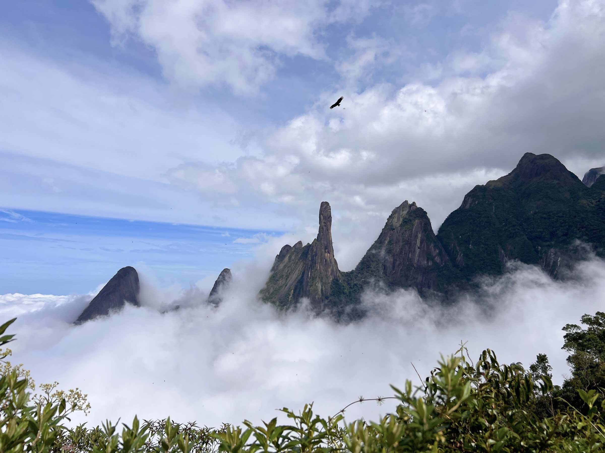
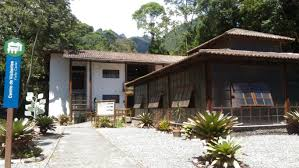

O Parque Nacional da Serra dos Órgãos (PARNASO) é uma das mais importantes áreas de conservação do Brasil, localizado na região serrana do estado do Rio de Janeiro. Com uma área de aproximadamente 110.000 hectares, o parque abriga uma rica biodiversidade, incluindo diversas espécies de flora e fauna ameaçadas de extinção. É famoso por suas imponentes formações rochosas, como o Dedo de Deus e o Pico da Pedra do Sino, além de oferecer trilhas desafiadoras e vistas panorâmicas deslumbrantes. O parque é um destino popular para os amantes do ecoturismo e da aventura, oferecendo atividades como caminhadas, escaladas e observação de aves. As trilhas mais conhecidas incluem a Travessia Petrópolis-Teresópolis, que liga as cidades de Petrópolis e Teresópolis através de uma rota deslumbrante, e a trilha para o Pico da Pedra do Sino, o ponto mais alto do parque, com 2.263 metros de altitude.

>

O Parque Nacional da Serra dos Órgãos está localizado a cerca de 60 km do Rio de Janeiro, com acesso pelas cidades de Teresópolis, Guapimirim e Petrópolis. A entrada principal do parque fica em Teresópolis, na Estrada Teresópolis-Guapimirim (RJ-130). É possível chegar de carro ou ônibus, e há estacionamento disponível na entrada do parque. Para quem vem de ônibus, as empresas que operam na região oferecem linhas regulares partindo do Rio de Janeiro e de outras cidades próximas.
Sede Teresópolis Endereço: Av. Rotariana, s/n - Soberbo, Teresópolis - RJ, 25960-602 /Telefone: (21) 97896-2463
Sede Guapimirim Endereço: BR116, 98,5, Estr. da Barreira - Chácara Entrerios, Guapimirim - RJ, 25948-160/Telefone: (21) 2642-4072
Sede Petrópolis Endereço: Estrada do Bonfim, sn - Corrêas, Petrópolis - RJ, 25730-010/Telefone: (21) 97896-2463